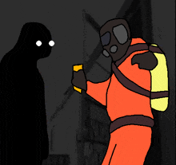
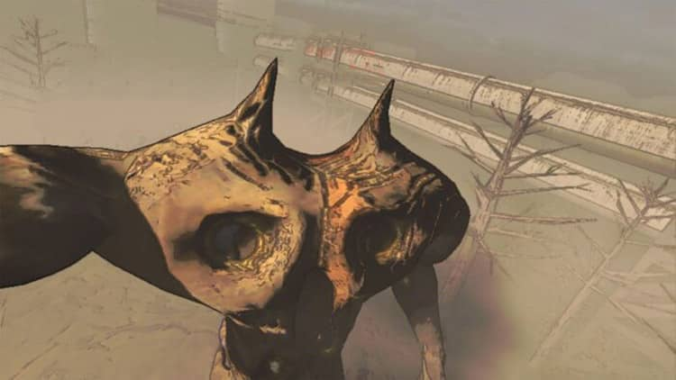
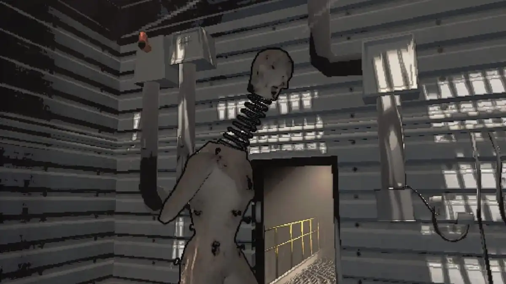
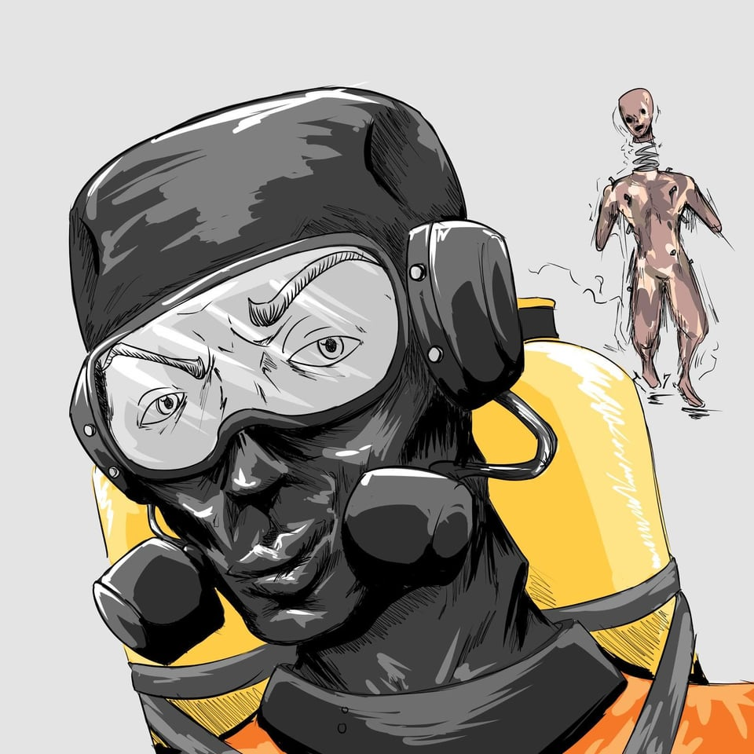
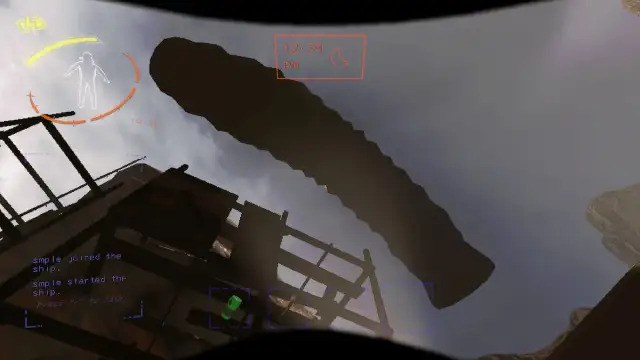
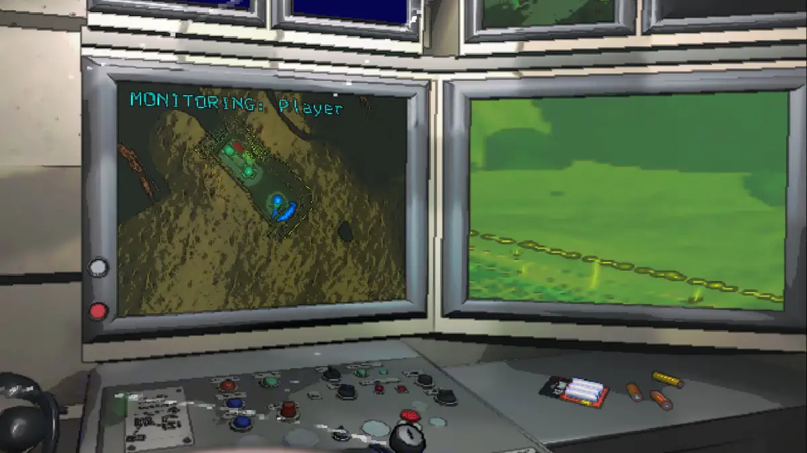
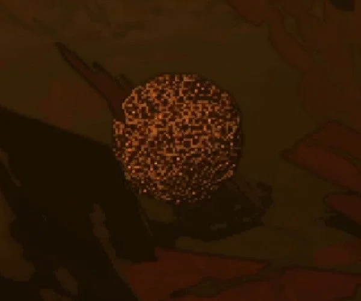
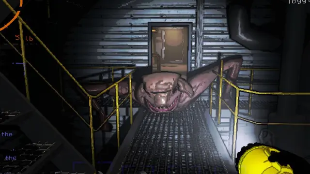
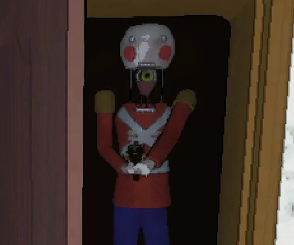

>MONSTROS
>BRACKEN

É um monstro de aparência humanoide com olhos brilhantes. É um inimigo bastante silencioso e silencioso, portanto você não o ouvirá chegando. É recomendável que você fique olhando para ele por um segundo para que desapareça, mas não se esqueça de verificar suas costas. Ele faz uma pausa por um segundo quando você olha para ele e desaparecerá se você mantiver uma boa distância entre você e ele. Entretanto, ficar olhando para ele por muito tempo fará com que ele o persiga, portanto, corra se ele começar a rosnar para você.

Lembre-se de que ele não para de persegui-lo mesmo depois que você se afasta dele, portanto, não deixe de verificar o que está acontecendo atrás de você. Eles são conhecidos por perseguir os jogadores por um tempo antes de matá-los e geralmente têm uma sala designada no mapa para levar o corpo de suas vítimas, o que dificulta o resgate do cadáver.

>Hoarding Bug

Eles não o atacarão, a menos que sejam provocados; geralmente, estão perto do ninho, que pode incluir alguns restos. Eles só o atacarão se quiserem o seu saque ou se você tentar roubar o deles do ninho. Não fique perto do ninho por muito tempo, pois isso pode agitá-los. Certifique-se de deixar qualquer sucata que você queira que outra pessoa leve de volta para a nave FORA do prédio para que eles não a roubem. Eu já os vi roubando nossas lanternas que podem ter sido derrubadas por acidente ou por morte.

Normalmente, eles estão patrulhando uma área próxima ao ninho e só o atacarão se você permanecer na área por muito tempo ou bloquear o caminho deles. Elas tendem a abrir as asas e começar a voar quando se tornam agressivas e começam a atacar os jogadores. Você pode matá-los facilmente com uma pá se estiver saudável o suficiente.

>FOREST KEEPER

São criaturas gigantescas que podem ser detectadas por sua altura e pisadas fortes. Não é possível fugir delas, portanto, é melhor evitá-las, abrigando-se para ficar fora da linha de visão delas. Notei distorção e impossibilidade de usar o rádio quando estou perto deles, mas não posso confirmar se isso se deve a eles ou a outra coisa. Você também pode atordoá-los para que derrubem um jogador que eles tenham agarrado, o que provavelmente significa que as granadas de atordoamento funcionam neles.

>Coil Head

Uma criatura semelhante a uma boneca humana com uma espécie de mola conectando sua cabeça. Ela só se move quando não é vista, portanto, se você vir uma, fique olhando para ela enquanto se afasta. Eles não podem atravessar portas inicialmente, mas podem quebrar a porta se estiverem perseguindo um jogador. Eles podem ser muito rápidos se não forem detectados, portanto, mantenha-se de costas para uma parede se estiver sendo perseguido.

Você pode passar lentamente por eles se estiver olhando para eles e depois caminhar ao redor deles. Se estiver tentando trancá-los usando portas seguras, sugiro que se certifique de que as outras portas estejam trancadas. Eles podem facilmente matar alguém que esteja do outro lado da porta segura se você fechar a porta da qual eles estão olhando fixamente para a cabeça da bobina, e há uma maneira de eles darem a volta para perseguir o jogador.

>Eyeless Dogs

O nome é bastante autoexplicativo. Eles se parecem com um dinossauro com uma boca enorme. No entanto, como são cegos, não conseguem enxergar e podem ser neutralizados se você ficar quieto e não se mexer. Você pode passar agachado por eles depois que eles se afastarem para não ouvir seus passos. A audição deles é muito boa, portanto, certifique-se de não fazer muito barulho nem conversar com outras pessoas. Se você tiver um microfone sensível, ele poderá detectar o pressionamento de teclas no teclado. Se ele detectar você, começará a rosnar e atacará na direção em que ouviu o barulho. Tente largar qualquer item de duas mãos e se esquivar do ataque correndo para longe do painel. Ele foi visto surgindo a partir das 13 horas e em um grupo de três a partir das 18 horas.

Eles podem começar a acampar a nave se você não ficar atento ao seu redor e continuar usando o rádio para se comunicar com a equipe. Certifique-se de fechar a porta quando houver ameaças por perto, pois os cães cegos podem entrar na nave e comer você. Se eles estiverem do lado de fora da nave, esperando na porta fechada, você poderá usar a buzina alta para distraí-los para a frente da nave ou poderá pedir um item para que a cápsula de lançamento os atraia para longe da nave quando ela pousar.
>JESTER

O Jester só é encontrado em luas de alto nível. Ele parece ser uma caixa de macaco com pernas e um braço saindo dela. Ele pode correr nas proximidades e parecer passivo no início, mas, eventualmente, correrá até você e começará a dar corda no mecanismo.
O Jester passará algum tempo dando corda (cerca de 30 segundos, em nossa experiência). Durante esse tempo, todos os jogadores devem deixar o prédio o mais rápido possível.

Once the Jester finishes winding up, a giant skull will pop out and advance toward you, killing you instantly. It will then pursue the nearest player inside the building, becoming faster and faster, and will not stop until everyone has left or is dead.

>Hygrodere

Uma bolha lenta, colorida e fácil de ver, em forma de caracol, não tão perigosa se você for cuidadoso, mas que dissolve qualquer coisa que pisar nela. Ela perseguirá lentamente o jogador se for vista, mas, como não pode pular e se move lentamente, você pode facilmente pular em uma plataforma elevada para sobreviver ou até mesmo tentar pular sobre ela se estiver presa. Além disso, é recomendável não atacá-la, pois isso fará com que ela se mova ainda mais rápido.
>Baboon Hawk
.webp)
O que eu sei é que eles se reproduzem do lado de fora e são perigosos em grupos. Não são hostis à distância quando estão sozinhos, mas, quando há um bando deles, começam a ser agressivos. Eles também podem roubar seu saque, como um bug de acumulação, acredito. De acordo com os registros, eles podem atacar os cães sem olhos quando estiverem andando em grupo. Percebi que eles têm medo da luz e recuam se você apontar a lanterna para eles, a menos que estejam em grupo.
>Bunker Spiders

Uma aranha lenta, mas difícil de ser derrotada, que geralmente está perambulando por uma área. Se você vir teias, fique atento, pois a aranha pode estar por perto e ela também pode atravessar respiradouros. Ela pode matar você e sua equipe com facilidade. Você pode destruir as teias, mas lembre-se de que, às vezes, a aranha pode matá-lo com um único golpe. Há rumores de que a aranha tem um cone de visão curto, mas, se você pisar em uma teia, ela o atacará.
>MASK/HAPPY OR SAD

Normalmente, ele aparecerá como um item ou como um inimigo. Se aparecer como um item no mapa, ele poderá ser vendido, mas tome cuidado ao tentar equipá-lo, pois ele pode não fazer nada ou pode possuí-lo e seu corpo não será mais seu.
>Leviathan

Verme enorme que fica no subsolo. Normalmente, você pode ouvir o verme no início do dia, pois ele sairá do solo para servir de aviso. Depois disso, ele pode aparecer a qualquer momento após as 15h. Portanto, se você ouvir algum barulho estranho ou se o chão estiver tremendo embaixo de você, é aconselhável largar qualquer saque pesado e correr antes que ele saia do chão e o engula.

Você precisará da ajuda do seu colega de equipe para verificar o radar se ele vir um enorme ponto vermelho do lado de fora, pois isso pode ajudá-lo a saber que o verme está vindo em sua direção, já que não há muito tempo para reagir antes que ele saia do chão. Ele tem um raio de ataque enorme e pode facilmente comer vários jogadores e seus itens. Ele não deixa cadáveres e eles também não podem ser teletransportados.
>Circuit Bees

Um enxame de abelhas só atacará se for perturbado ou se sua colmeia for roubada. A colmeia pode ser roubada para ser vendida por créditos. Essa é uma tática arriscada que você pode usar antes de sair, pois ela o perseguirá se você estiver com a colmeia. Peça a alguém que corra perto para distrair as abelhas enquanto a outra pessoa pega a colméia e a leva para o navio antes de sair. Certifique-se de não ser visto, pois elas o perseguirão e atacarão se encontrarem a colmeia. Se você tiver roubado a colmeia, elas não pararão de atacar a pessoa que elas têm como alvo até que ela morra. Entre na instalação ou na nave e tranque a porta. O mesmo acontece se você se aproximar das abelhas do circuito que não têm uma colmeia, pois elas também o perseguirão indefinidamente.
>Snare Flea

Uma criatura parecida com um verme que geralmente fica pendurada no teto. Geralmente, é possível ouvi-los abrindo aberturas ou um som sibilante ao perseguir um jogador. Eles se agarrarão a qualquer visitante desavisado. Se estiver sozinho, tente sair das instalações; se estiver com uma equipe, peça a um colega para bater em você com uma pá (nenhum amigo resistiria a isso) para que ele seja removido e, em seguida, bata mais duas vezes para matá-lo. Sua voz é abafada quando ele está preso a você e você também deixará cair todos os itens que tiver em seu inventário.

Você também pode removê-lo se for teletransportado ou se sair das instalações, o que mataria a pulga laço. Também notei que ele o deixa em estado crítico se estiver jogando sozinho.
>Thumper

Um lagarto de aparência estranha com duas pernas que é rápido em corredores longos e muito barulhento. Se você ouvir barulhos de batidas, fique atento e não corra em linha reta se o encontrar. Ele leva alguns golpes antes de morrer, então você pode tentar ir para a saída ou passar correndo por ele. Fechar a porta não ajudará, pois ele pode simplesmente abrir a porta enquanto o persegue.
>Ghost Girl

A Ghost Girl pode ser encontrada em luas distantes que são mais caras para se chegar. Ela assombra apenas um jogador por vez, ou seja, se você a vir, é porque foi escolhido como vítima dela. Ninguém mais pode vê-la, nem mesmo se você estiver assistindo ao jogador assombrado.
A garota pode aparecer parada por um curto período, mas se ela começar a pular em sua direção, você precisará fugir o mais rápido possível. Se ela o pegar, removerá sua cabeça, matando-o instantaneamente.
>Nutcracker

O Quebra-nozes é um boneco de madeira que empunha uma espingarda. Ao andar pelo nível, ele ocasionalmente para e levanta a cabeça, expondo um olho amarelo onde deveria estar o pescoço. Em seguida, ele examina a vizinhança, fazendo barulhos perturbadores de madeira.
Se o quebra-nozes detectar movimento enquanto estiver fazendo a varredura, ele perseguirá e atirará no culpado, mesmo que ele pare de se mover em seguida. No entanto, é possível danificar o quebra-nozes enquanto o olho estiver exposto. Você também pode roubar a espingarda do Quebra-nozes pressionando [E] quando estiver próximo a ele.
>Spore Lizard

O Spore Lizard é uma criatura de quatro patas com uma enorme boca redonda e uma esfera roxa na extremidade da cauda. Se você o encontrar correndo pelos corredores, é provável que ele pare, abra a boca para você e abane a cauda. Essa criatura não é uma grande ameaça e, em vez disso, comporta-se mais como um filhote de cachorro brincalhão.

Se você chegar perto deles, eles soltarão uma névoa rosa que obscurecerá sua visão, mas não causará nenhum dano. Se você chegar mais perto, eles lhe darão uma leve mordida de advertência.
Monsters in mods
>MIMIC
Esse monstro é perfeito para enganar os jogadores que querem desesperadamente sair do bunker para guardar seus itens na nave. O Mimic aparece no mapa como uma porta de saída de emergência, e há vários contadores que podem levá-lo a descobrir se é um Mimic ou apenas uma porta normal.
Uma das maneiras de descobrir se é um Mimic ou não é pintar com spray a suposta saída de emergência. Se a saída não estiver pichada, é um sinal de que está tudo bem e é uma porta normal, mas se estiver pichada, evite-a porque é um Mimic esperando por um bom almoço.
Outra maneira é atingir o suposto Mimic com uma pá ou uma placa que você encontra aleatoriamente no mapa. Se for um Mimic, quando você o atingir, ele emitirá um som muito perturbador. MAS TENHA CUIDADO, não bata muitas vezes, pois se isso acontecer.
Ele terá uma ótima refeição com você e seus amigos como aperitivo, afinal, quem gostaria de ser espancado, não é mesmo?
>Skinwalker
O Skinwalke não é exatamente um monstro, é apenas um mod em que você adiciona uma gravação de voz usada em voip por seus companheiros, para que os monstros possam falar e enganar os embargadores neste planeta.